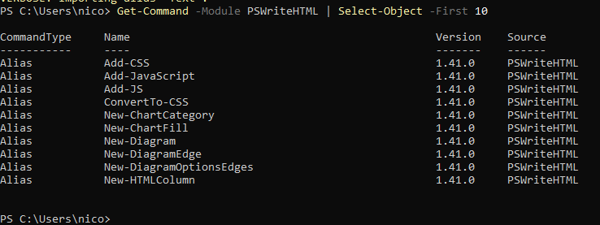

Chapter 2: Installation, Dependencies, and Setup
Installation Overview
Before using PSWriteHTML to construct interactive reports, dashboards, or emails, you must properly set up the PowerShell environment and ensure all core and optional module dependencies are available.
PSWriteHTML is distributed via the PowerShell Gallery and supports cross-platform execution on Windows, macOS, and Linux.
Prerequisites & Requirements
PSWriteHTML works across major PowerShell editions and operating systems:
PowerShell 5.1 (Windows PowerShell included with Windows 10/11 & Windows Server 2016+)
PowerShell 7.x+ (PowerShell Core — Windows, macOS, Linux)
Execution Policy: Must permit running locally installed scripts (e.g.,
RemoteSignedorUnrestricted).
Note
PowerShell 7.x is recommended for optimal performance, especially when processing large datasets or generating complex multi-tab reports with heavy DataTables integration.
This manual was written for version 1.41.0 and later of PSWriteHTML. For older versions, refer to the archived documentation on the GitHub repository.
Module Dependencies
PSWriteHTML is designed as an ecosystem parent/child module. Depending on the visual components you use (charts, diagrams, color palettes), PSWriteHTML automatically utilizes or suggests complementary modules developed by Evotec:
Primary Dependencies
Module Name |
Purpose / Functionality |
|---|---|
PSSharedGoods |
Core helper functions, file handling, and string manipulation. |
PSWriteColor |
Enhanced console output formatting during report generation. |
Connectimo |
Optional network visualizer integration for topology diagrams. |
Warning
When installing PSWriteHTML via Install-Module, PowerShell automatically resolves and installs required dependencies like PSSharedGoods. If installing manually in an isolated/air-gapped environment, you must copy these dependency modules manually.
Installation Methods
Method 1: Installation from PowerShell Gallery (Recommended)
The quickest way to install PSWriteHTML for the current user or system-wide is using Install-Module.
For the Current User (No Admin Rights Required):
Install-Module -Name PSWriteHTML -Scope CurrentUser -Repository PSGallery -Force
System-Wide (Requires Administrator Privilege):
Install-Module -Name PSWriteHTML -Scope AllUsers -Repository PSGallery -Force
Method 2: Offline / Air-Gapped Installation
If your target machine lacks direct internet access (e.g., secure production servers), download the module on an internet-connected machine and transfer it.
Save the module and dependencies to a local folder:
Save-Module -Name PSWriteHTML -Path "C:\OfflineModules" -Repository PSGallery
Copy the folder to the target machine’s PowerShell module directory:
Windows PowerShell 5.1:
C:\Program Files\WindowsPowerShell\Modules\PowerShell 7 (All Users):
C:\Program Files\PowerShell\7\Modules\PowerShell 7 (Current User):
$HOME\Documents\PowerShell\Modules\
Verify the path is listed in environment variables:
$env:PSModulePath -split ';'
Method 3: Automated Scripting / CI/CD Pipeline
For automated deployment pipelines (GitHub Actions, Azure DevOps, Jenkins), ensure the package provider is updated before installing:
# Trust PowerShell Gallery and install silently
Set-PSRepository -Name 'PSGallery' -InstallationPolicy Trusted
Install-Module -Name PSWriteHTML -Scope CurrentUser -Force -AllowClobber
Verifying the Installation
After completing installation, verify that the module is imported correctly and inspect available cmdlets.
Check Installed Version:
Get-InstalledModule -Name PSWriteHTML
Import and Inspect Available Cmdlets:
Import-Module PSWriteHTML -Verbose Get-Command -Module PSWriteHTML | Select-Object -First 10
Expected output includes core functions like ``New-HTML``, ``New-HTMLTab``, ``New-HTMLTable``, and ``New-HTMLChart``.
{kind=link}

Fig. 4 PowerShell modules available after installing PSWriteHTML and its dependencies.
Successful setup allows instant execution of DSL-based layout commands.
If you should face any errors with the PowerShell execution policy that prevents script execution, you can normally resolve it by running the following command:
Set-ExecutionPolicy -ExecutionPolicy RemoteSigned -Scope CurrentUser
Updating & Uninstalling
Updating to the Latest Version
To update PSWriteHTML and pull in the latest web libraries (ApexCharts, DataTables, FontAwesome updates):
Update-Module -Name PSWriteHTML -Force
Uninstalling the Module
To remove PSWriteHTML and clean up the environment:
Remove-Module -Name PSWriteHTML -ErrorAction SilentlyContinue
Uninstall-Module -Name PSWriteHTML -AllVersions -Force
Importing the module
As usual with PowerShell modules, before using the module you should import it with the following command:
Import-Module PSWriteHTML
But this is not mandatory because PowerShell 3.0+ supports module auto-loading: when you execute a command belonging to an installed module, PowerShell automatically imports the module, provided the module is in $env:PSModulePath and you’re using a modern version of PowerShell. From now on, all examples in this manual will not explicitly import the module at the beginning of the script.
On the other hand, if you want to use the module in a script, it is recommended to import it explicitly at the beginning of the script, so that:
makes the script’s dependency obvious
causes a failure immediately if PSWriteHTML cannot be loaded
makes troubleshooting easier
Troubleshooting Common Setup Issues
- Issue: Script Execution Disabled
Error:
...cannot be loaded because running scripts is disabled on this system.Solution: Run
Set-ExecutionPolicy -ExecutionPolicy RemoteSigned -Scope CurrentUser.
- Issue: NuGet Provider Prompt
Error:
NuGet provider is required to continue...Solution: Force NuGet provider installation with
Install-PackageProvider -Name NuGet -MinimumVersion 2.8.5.201 -Force.
- Issue: Dependency Conflict
Error: Multiple versions of
PSSharedGoodsloaded.Solution: Remove older module versions using
Uninstall-Module PSSharedGoods -AllVersionsand re-import PSWriteHTML.
Next Chapter: Chapter 3: Basic HTML Structure and Document Flow